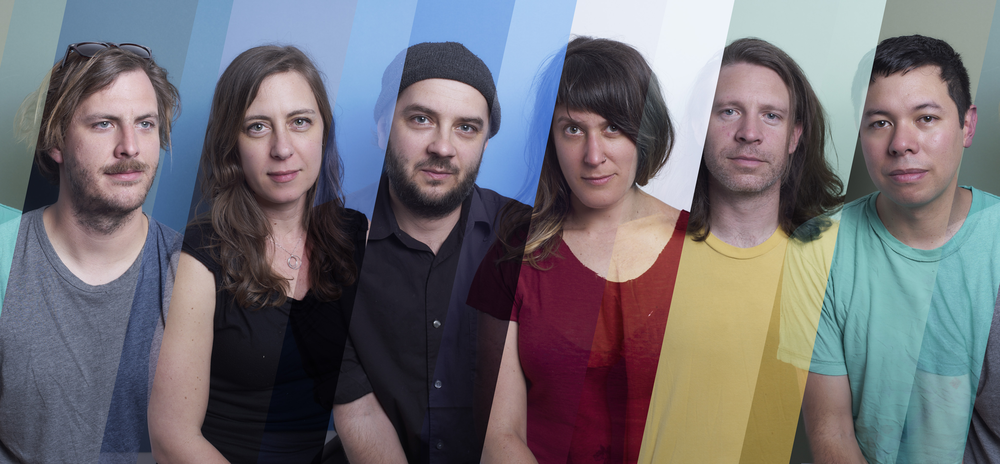

Secret Drum Band
photo by Marcus Fischer
Secret Drum Band’s debut album, Dynamics (XRAY Records, August 2017), sees composers Lisa Schonberg, Allan Wilson, and Heather Treadway delving headway into creating living, breathing soundscapes, rich in rhythmic textures. Driven by five drummers, each song also employs an array of affected vocals, guitar, and synthesizers from noise musicians, often mimicking sounds found in nature.
Stylistically, Secret Drum Band pull from a unique vantage point, drawing allusions from Liquid Liquid, The Creatures, and Crash Worship, as well as the composers’ previous groups Explode Into Colors and !!! (chk chk chk). Dynamics is a vibrant work of serious intent, expertly rendered with a playfully exuberant spark.
The album’s eight tracks were written in response to locations in the Mojave Desert, logging sites in Mount Hood National Forest in Oregon, and Hawai’i, where Schonberg’s entomology work has helped the native Hylaeus bees attain endangered species status. "Kīpukapuaulu’s" vibrant polyrhythmic cadences insinuate an endless vortex of bird calls, while the cacophonous tension of "Jazz (Timber Sale)" simultaneously evokes the complexity of the forest flora and the anxiety of approaching logging trucks. “For us, music is the most publicly effective (and personally healing) vehicle to make statements about environmental issues,” adds Schonberg.
Secret Drum Band’s live performances are transportive, an opportune meditation on the relationships between humans, ecology and music. All pieces are carefully scored by Schonberg and Wilson, allowing each musician to realize the complex and intricate arrangements in a live setting. Dynamics aptly captures this concentrated effort , allowing sharp details to roar within the thunder of the drums.
“They’re not simply playing a show, they’re creating an immersive experience that lasts for a moment, then dissolves, creating a hypnotic alternate reality for all who bear witness to it.”
-The Oregonian

Secret Drum Band - Dynamics
COMING AUGUST 2017